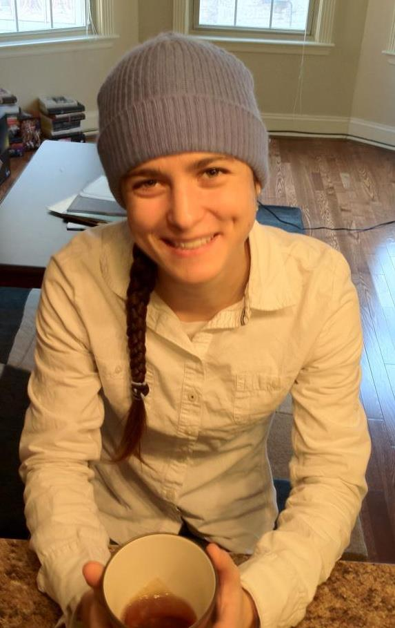

|  |
Jennifer GillenwaterCV Email: jgillenw at gmail dot com Research Interests: Machine Learning and NLP Code Determinantal Point Processes (DPPs) Alex Kulesza's many DPP codes DPP approx-MAP (NIPS 2012 paper) DPP learning via EM (NIPS 2013 paper) Posterior Regularization (PR) General PR toolkit Luheng He's Graph-Based PR code (CoNLL 2013 paper) |
|
Publications 2015 Submodular Hamming Metrics [Bibtex]
@inproceedings{gillenwater2015nips,
title = {{Submodular Hamming Metrics}},
author = {Gillenwater, J. and Iyer, R. and Lusch, B. and Kidambi, R. and Bilmes, J.},
booktitle = {Proc.\ Neural Information Processing Systems (NIPS)},
year = 2015,
}
Jennifer Gillenwater, Rishabh Iyer, Bethany Lusch, Rahul Kidambi, and Jeff Bilmes. Neural Information Processing Systems (NIPS), 2015. [Supplement] [Poster] 2014 Approximate Inference for Determinantal Point Processes [Bibtex]
@phdthesis{gillenwater2014thesis,
author = {Gillenwater, J.},
title = {{Approximate Inference for Determinantal Point Processes}},
school = {University of Pennsylvania},
year = 2014,
}
Jennifer Gillenwater. PhD Thesis, University of Pennsylvania, 2014. Expectation-Maximization for Learning Determinantal Point Processes [Bibtex]
@inproceedings{gillenwater2014nips,
title = {{Expectation-Maximization for Learning Determinantal Point Processes}},
author = {Gillenwater, J. and Kulesza, A. and Fox, E. and Taskar, B.},
booktitle = {Proc.\ Neural Information Processing Systems (NIPS)},
year = 2014,
}
Jennifer Gillenwater, Alex Kulesza, Emily Fox, and Ben Taskar. Neural Information Processing Systems (NIPS), 2014. [Supplement] [Code] [Poster] Maximization of Non-Monotone Submodular Functions [Bibtex]
@techreport{gillenwater2014tr,
title = {{Maximization of Non-Monotone Submodular Functions}},
author = {Gillenwater, J.},
number = {MS-CIS-14-01},
institution = {University of Pennsylvania},
year = 2014,
}
Jennifer Gillenwater. Written Preliminary Examination II (WPE-II), 2014. [Slides] 2013 Graph-Based Posterior Regularization for Semi-Supervised Structured Prediction [Bibtex]
@inproceedings{he2013conll,
title = {{Graph-Based Posterior Regularization for Semi-Supervised Structured Prediction}},
author = {He, L. and Gillenwater, J. and Taskar, B.},
booktitle = {Proc.\ Conference on Computational Natural Language Learning (CoNLL)},
year = 2013,
}
Luheng He, Jennifer Gillenwater, and Ben Taskar. Conference on Computational Natural Language Learning (CoNLL), 2013. [Supplement] [Code] [Poster] [Slides (.key) (.pdf)] End-to-End Learning of Parsing Models for Information Retrieval [Bibtex]
@inproceedings{gillenwater2013icassp,
title = {{End-to-End Learning of Parsing Models for Information Retrieval}},
author = {Gillenwater, J. and He, X. and Gao, J. and Deng, L.},
booktitle = {Proc.\ International Conference on Acoustics, Speech, and Signal Processing (ICASSP)},
year = 2013,
}
Jennifer Gillenwater, Xiaodong He, Jianfeng Gao, and Li Deng. International Conference on Acoustics, Speech, and Signal Processing (ICASSP), 2013. [Poster] 2012 Near-Optimal MAP Inference for Determinantal Point Processes [Bibtex]
@inproceedings{gillenwater2012nips,
title = {{Near-Optimal MAP Inference for Determinantal Point Processes}},
author = {Gillenwater, J. and Kulesza, A. and Taskar, B.},
booktitle = {Proc.\ Neural Information Processing Systems (NIPS)},
year = 2012,
}
Jennifer Gillenwater, Alex Kulesza, and Ben Taskar. Neural Information Processing Systems (NIPS), 2012. [Supplement] [Code and Data] [Poster] [Slides (.key) (.pdf)] [Video] Discovering Diverse and Salient Threads in Document Collections [Bibtex]
@inproceedings{gillenwater2012emnlp,
title = {{Discovering Diverse and Salient Threads in Document Collections}},
author = {Gillenwater, J. and Kulesza, A. and Taskar, B.},
booktitle = {Proc.\ Empirical Methods in Natural Language Processing (EMNLP)},
year = 2012,
}
Jennifer Gillenwater, Alex Kulesza, and Ben Taskar. Empirical Methods in Natural Language Processing (EMNLP), 2012. [Supplement] [Poster] 2011 Large-Scale Modeling of Diverse Paths using Structured k-DPPs Jennifer Gillenwater, Alex Kulesza, and Ben Taskar. New York Academy of Sciences (NYAS) Machine Learning Symposium, 2011. [Poster] [Slides] Large-Scale Modeling of Diverse Paths using Structured k-DPPs Jennifer Gillenwater, Alex Kulesza, and Ben Taskar. Mid-Atlantic Student Colloquium on Speech, Language, and Learning, 2011. [Poster] [Spotlight] Posterior Sparsity in Unsupervised Dependency Parsing [Bibtex]
@article{gillenwater2011jmlr,
title = {{Posterior Sparsity in Unsupervised Dependency Parsing}},
author = {Gillenwater, J. and Ganchev, K. and Gra\c{c}a, J. and Pereira, F. and Taskar, B.},
journal = {Journal of Machine Learning Research (JMLR)},
year = 2011,
}
Jennifer Gillenwater, Kuzman Ganchev, João Graça, Fernando Pereira, and Ben Taskar. Journal of Machine Learning Research (JMLR), 2011. [PR Toolkit] 2010 Sparsity in Dependency Grammar Induction Jennifer Gillenwater, Kuzman Ganchev, João Graça, Fernando Pereira, and Ben Taskar. New York Academy of Sciences (NYAS) Machine Learning Symposium, 2010. [Poster] [Slides] Sparsity in Dependency Grammar Induction [Bibtex]
@inproceedings{gillenwater2010acl,
title = {{Sparsity in Dependency Grammar Induction}},
author = {Gillenwater, J. and Ganchev, K. and Gra\c{c}a, J. and Pereira, F. and Taskar, B.},
booktitle = {Proc.\ Association for Computational Linguistics (ACL)},
year = 2010,
}
Jennifer Gillenwater, Kuzman Ganchev, João Graça, Fernando Pereira, and Ben Taskar. Association for Computational Linguistics (ACL), 2010. [Poster] [Slides] Posterior Regularization for Structured Latent Variable Models [Bibtex]
@article{ganchev2010jmlr,
title = {{Posterior Regularization for Structured Latent Variable Models}},
author = {Ganchev, K. and Gra\c{c}a, J. and Gillenwater, J. and Taskar, B.},
journal = {Journal of Machine Learning Research (JMLR)},
year = 2010,
}
Kuzman Ganchev, João Graça, Jennifer Gillenwater, and Ben Taskar. Journal of Machine Learning Research (JMLR), 2010. 2009 Sparsity in Grammar Induction Jennifer Gillenwater, Kuzman Ganchev, João Graça, Fernando Pereira, and Ben Taskar. Neural Information Processing Systems (NIPS) Grammar Induction Workshop, 2009. [Slides] [Video] Dependency Grammar Induction via Bitext Projection Constraints [Bibtex]
@inproceedings{ganchev2009acl,
title = {{Dependency Grammar Induction via Bitext Projection Constraints}},
author = {Ganchev, K. and Gillenwater, J. and Taskar, B.},
booktitle = {Proc.\ Association for Computational Linguistics (ACL)},
year = 2009,
}
Kuzman Ganchev, Jennifer Gillenwater, and Ben Taskar. Association for Computational Linguistics (ACL), 2009. 2008 Synthesizable High Level Hardware Descriptions [Bibtex]
@inproceedings{gillenwater2008pepm,
title = {{Synthesizable High Level Hardware Descriptions}},
author = {Gillenwater, J. and Malecha, G. and Salama, C. and Zhu, A. and Taha, W. and Grundy, J. and O'Leary, J.},
booktitle = {Proc.\ Partial Evaluation and Program Manipulation (PEPM)},
year = 2008,
}
Jennifer Gillenwater, Gregory Malecha, Cherif Salama, Angela Yun Zhu, Walid Taha, Jim Grundy, and John O'Leary, Partial Evaluation and Program Manipulation (PEPM), 2008. 2007 Formalizing and Enhancing Verilog Jennifer Gillenwater, Gregory Malecha, Cherif Salama, Angela Yun Zhu, Walid Taha, Jim Grundy, and John O'Leary. Technology and Talent for the 21st Century (TECHCON), 2007. Synthesizable Verilog Cherif Andraos, Jennifer Gillenwater, Gregory Malecha, Angela Yun Zhu, Walid Taha, Jim Grundy, and John O'Leary. Workshop on Hardware Design and Functional Languages (HFL), 2007. | |